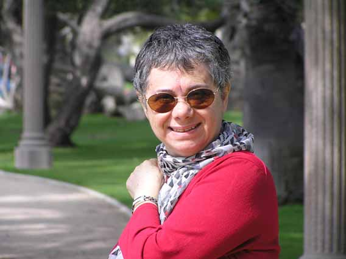

- پیشینه ی خانوادگی:
سایت زنستان: پروین پایدار در 29 سپتامبر 1949 ( 7 مهر 1328) در تبریز به دنیا آمد. او بزرگترین فرزند خانواده،شامل 5 دختر و یک پسر _ که در سال 1960 و در سن 6 سالگی فوت کرد_ بود. چهار خواهر دیگر در حال حاضر در لس انجلس کالیفرنیا کار و زندگی می کنند.
پروین با همسرش، سروش جوادی (متولد1949) در سال 1971 وقتی در دانشگاه تهران دانشجو بود آشنا شد.آن ها اول فوریه ی 1973 ازدواج کرده و کمی بعد ایران را به مقصد لندن جهت ادامه ی تحصیل ترک کردند. آنها در سال 1989 به تابعیت بریتانیا در آمدند و هیچ فرزندی به دنیا نیاورند. سروش جوادی نیز در سازمان های غیر دولتی بین المللی و سازمان ملل در انگلیس و همچنین ازبکستان و افغانستان فعال بود.
اواخر دهه ی 70 میلادی از جهات بسیاری قابل توجه بود. طبقه ی روشنفکر ایرانی، به شدت سیاسی شده و نارضایتی های سیاسی و اجتماعی و نا آرامی رو به افزایش بود. سنت گرایان با حلقه ی آکادمیک در چالش بودند و پست مدرنیسم در تمام شاخه های مباخث روشنفکری از جمله سیاست و فمنیسم رو به شکل گیری و گسترش بود. این عوامل ابزاری در شکل دادن توجه ویژه ی پروین در مسیری نوین به سوی مسائل زنان به طور عام و زنان ایران به طور خاص در طول همان دوران بودند.
کمی بعد از انقلاب ایران، پروین کار با یک گروه کوچک زنان فعال ایرانی در لندن را آغاز کرد. این حدودن زمانی بود که پروین و تعدادی از دوستان/همکاران شرو ع به صحبت درباره و کمی بعد انتشار نشریه ی دوره ای با نفوذ زنان ایران تحت عنوان نیمه ی دیگر کردند. پروین نقش منتقد نسبت به موقعیت زنان ایرانی ورای هرگونه نقسیم بندی ایدولوژیکی و مذهبی ایفا کرد. سال ها فعالیت و درگیری و ایفای نقش به طور گسترده در مسایل زنان ایرانی همه جلوه ی متفاوتی از این باور پایه ای و پخته و شفاف و موثر بود.

در کنار فعالیت و نوشتن به عنوان یکی از اعضای هیئت تحریریه ی نیمه ی دیگر پروین در بسیاری از نشریات و کتب فمنیستی نقش داشت.او همچنین شروع به تشریک مساعی با افسانه نجم آبادی در نوشتن اولین کتاب در باره ی مسئله ی زنان ایرانی کرد. کتاب "در سایه ی اسلام" توسط نشر " زِد" در سال 1982 منتشر شد. پایداری فوق العاده اش و قدرت تمرکز اش حیرت انگیز بود_ او ساعت های متمادی بدون هیچ توقفی بر روی تز دکترایش، مقاله ها و غیره کار می کرد. واضح است، بنیه ی قوی ای داشت و کار سخت و طولانی ظاهرن به معنی رنجش چشم ها و تغییر مداوم نمره ی عینک اش بود.
اولین حمله ی ملانوما در می 1983 کمی بعد از انتشار کتاب در سایه ی اسلام بود. پروین تحت عمل جراحی قرار گرفت و پزشکان غدد لنفاوی اطراف یک خال بدخیم را خارج کردند. دوره ی پرتنشی بود و این سوال و امید که آیا بیماری عود خواهد کرد یا خیر. طی دو سه سال بعد بیماری تقریبن به فراموشی سپرده شد.
حدود 20 سال بعد از آن در ژانویه سال 2003 بود که پروین بار دیگر با حمله ی تومور مواجه شد ولی این بار جدی تر و خطرناک تر.شروع بیماری اندکی در زندگی روزانه و برنامه هایش گسست ایجاد کرد. کمی بعد پروین به کار خود در شورای پناهجویان و شورای تحریریه ی نشریه ی نیمه ی دیگر ، و نوشتن از مسایل زنان بازگشت و تحصیلات دانشگاهی خود را ادامه داد. او پیش از این در سال 1980 تحصیلات تکمیلی اش را در رشته ی جامعه شناسی سیاسی در دانشگاه بیرک بک به پایان رسانده بود. با ادامه ی تحصیل نیمه وقت او دکترایش را در سال 1990 گرفت که اساس آن نوشته های او درباره ی "زنان ایرانی در پروسه ی سیاست در قرن بیستم" بود.
در سال 1997 او به عضویت در "دبلیو یو اس" به عنوان مسیول تیم تحصیلات و آموزش پناهجویان درآمد. در طول دوره ی 8 ساله در این سازمان، پروین این گروه کوچک را به سازمان ترویج تحصیلات و آموزش پناهجویان بسط داد و به یکی از دو بخش اصلی و بعد از ان یکی از سازمان های نیمه مستقل زیر چتر "دبلیو یو اس" تبدیل کرد.
در سال 1995 اثر اصلی او " زنان دز پروسه ی سیاسی ایران در قرن بیستم" توسط انتشارات دانشگاه کمبریج منتشر شد. این اثر درموارد بسیاری به عنوان کتاب منبعی در باره ی تاریخ زنان ایران ستایش شد و به گفته ی نیکی کدی : بهترین کتاب در باب زنان خاورمیانه در هر کشوری است.
اوایل سال 1996، پروین نیاز شدید به تغییر و چالش جدید در زندگی اش پیدا کرد. او کارش را در سرویس جهانی دانشگاه ترک و پستی نیمه وقت در "بی آر اس" به عنوان هماهنگ کننده ی شعبه داخلی در پروژه ی بوسنی گرفت. آغاز کار با شعبه های بسیار و علاقه مندی های مختلف و توقعات هم زمان واقعن امری نزدیک به غیرممکن بود و استعداد طبیعی پروین برای برنامه ریزی و اوردن نظم به شرایط ظاهرن آشفته و جمع کردن مردم با ایده ها و علاقه مندی های مختلف بار دیگر غیر ممکن را به حقیقت پیوند داد.
کمی بعد در همان سال، پروین مقام "وی اس او" در پاکستان را به عهده گرفت، جایی که برای سه سال تا اواخر سال 1999 در آن کار کرد.این اولین باری بود که پروین و شوهر اش برای مدت طولانی از هم دور بودند تجربه ی جدیدی برای هردوی آن ها بود و فرصتی برای اینکه قدر بدانند که چقدر به هم متکی هستند . در تاشکند، ازبکستان در سپتامبر 2000، چندماه بعد از اینکه پروین پستی در برنامه ی حمایت از کودکان منطقه در آسیای مرکزی را به عهده گرفت آنها دوباره به هم پیوستند.با هم بودن آنها در تاشکند تبدیل به خاطره انگیز ترین دوران آنها شد. آنها از زندگی آسوده لذت می بردند و کارشان را چالش برانگیر و فوق العاده می یافتند. لازم به یادآوری نیست که پروین دوباره درگیر ساختن و برپاداشتن برنامه ی حمایت از کودکان به عنوان کلیدی برای توسعه در اسیای مرکزی بود. پروین و شوهر اش بار دیگر از هم دور افتادند. در سال 2002 پروین از طرف یونیفم که از او به نیویورک دعوت می کرد برای مصاحبه ای برای پستی در یونیفم جهت برنامه ریزی ای در افغانستان فراخوانده شد. انها پستی را درست بعد از مصاحبه به او پیشنهاد دادند. رییس یونیسف به او گفت که تولد اش است و اگر او مسئولیت را قبول کند بهترین هدیه ای را که می توانست آرزویش را داشته باشد به او داده است. طبیعتن پروین به هیجان آمد. این به واقعیت پیوستن آرزوی پروین یعنی کار کردن برای زنان بود. یقینن او اشتیاق کار در افغانستان به خصوص در آن روزهای اول را داشت اما این شانسی بود که یکبار در زندگی به پروین روی کرده بود و نباید از دست اش می داد.
بار دیگر پروین برپاداشتن سازمانی را از تقربن هیچ، میان همه ی رقابت های داخلی و خارجی و خطوط قرمز اغاز کرد. او برنامه ی یونیفم در افغانستان را کلیدی برای توسعه ی مسایل مربوط به زنان ساخت ولی همتای او در وزارت اموز زنان در افغانستان فشار هنگفتی به او آورند تا برنامه را در انحصار خود درآورند.
همه ی کارها در مدت کوتاهی پایان گرفت. پروین کار خود را در افغانستان در اوریل 2002 آغاز کرد. در ژانویه ی 2003 هنگامی که او و همسرش در لس انجلس برای یک دیدار خانوادگی بودند،غده ای بدخیم در زیر بازویش تشخیص داده شد. دوره ی سختی به خصوص برای پروین و خانواده اش بود زیرا مادر پروین هم می بایست در همان زمان تحت عمل جراحی قرار می گرفت. پروین کمی بعد از عمل جراحی اش و خارج کردن غده به کابل باز گشت و چند ماه بعد در می 2003 شوهر اش در کابل به او پیوست. او کار در افغانستان را تا جولای 2003 وقتی تومور بدخیمی در سرش پیدا شد ادامه داد. او برای خارج کردن تومور به لس انجلس رفت و درمان را در آنجا دنبال کرد و زمانی تصمیم به ماندن گرفت که برایش مشخص شد ماندن در کنار 4 خواهرش در لس انجلس و تمرکز روی درمان بیماری بهترین گزینه برای اوست.
27 ماه پایان زندگی پروین در لس انجلس هم داستانی از اشتیاق او و قدرت اش در مبارزه با بیماری اش بود. او نا امید نشد و درپی هر درمان موجهی بود اما هم زمان خود را برای هر احتمالی آماده می کرد. وقتی در چند هفته ی باقی مانده به عمرش مشخص شد که هیچ درمانی برایش وجود ندارد، مرگ را با بزرگواری و اشتاق خارق العاده ای پذیرفت. آخرین کلمات او به دوستان و خانواده اش نشان دهنده ی این آرامش و بزرگی اش در پایان زندگی بود. او علی رغم چهار عمل جراحی سنگین درد زیادی را متحمل نشد.او در پنجشنبه 20 اکتبر چند روز بعد از اینکه در کما فرو رفت با آرامش و در میان دوستان و خانواده اش درگذشت. او تولد 56 سالگی شان را تنها چند هفته قبل در جمع خانواده و همسر اش جشن گرفت.
- تحصیلات و آموزش های حرفه ای
1994-1997: دانشگاه بیرمنگهام ، انگلستان MBA (خدمات اجتماعی )
1980-1990 :کالج بیرکبک،دانشگاه لندن، انگلستان،Ph.D. جامعه شناسی اجتماعی
تحقیق دکترا بر روی بررسی سیاست جنسیت و توسعه در ایران. این کار شامل تحقیق و کار میدانی در ایران بین سال های 1979 و 80 است.
1978-1980: کالج بیرکبک،دانشگاه لندن، انگلستان،فوق لیسانس جامعه شناسی و علوم سیاسی
:1975-1978کالج بدفورد،دانشگاه لندن،لیسانس جامعه شناسی
1968-1972دانشگاه تهران لیسانس حسابداری
- مشاغل حرفه ای
آوریل 02 – مارس 04 صندوق توسعه ی ملل متحد برای زنان (UNIFEM)
نیویورک، الایات متحده امریکا مسیول پروژه افغانستان
ژانویه 99 – مارس 02
حمایت از کودکان
لندن، انگلستان مسیول پروژه، آسیای مرکزی، ازبکستان
نوامبر 96 – دسامبر 98 خدمات داوطلبانه ی برون مرزی(VSO)
لندن، انگلستان مسیول پروژه، پاکستان
ژانویه– اکتبر96 شورای پناهجویان
لندن، انگلستان هماهنگ کننده ی دایره ی داخلی در پروژه ی بوسنی
نوامبر 87- دسامبر95 سرویس جهانی دانشگاه (WUS)
لندن، انگلستان
مسیول پروژه ی پناهجویان(RETAS)
اوریل 84 – اکتبر 87 شورای پناهجویان
لندن، انگلستان مشاور پناه جویان، تیم آسیا
مارس 83 - اوریل85 مرکز کمیته ی ایرانیان
لندن، انگلستان مشاور و هماهنگ کننده ( زنان)
ژانویه 82 -مارس 83 موسسه ی مطالعات اسماعیلی
لندن، انگلستان مسیول تحقیق
- نوشته ها
مقالات پروين پايدار
Gender of Democracy: The Encounter between Feminism and Reformism in Contemporary Iran
Democracy
جنبش زنان در ايران/ مقاله پروين پايدار در نيمه ديگر
گفتگوي مجله زنان با پروين پايدار: جنبش زنان، گذار از فرقهگرايي و اقتدارگرايي